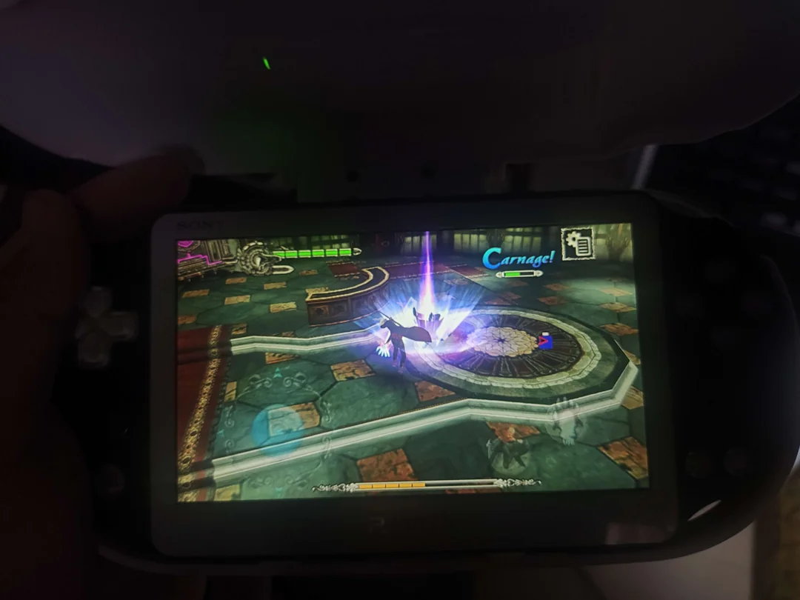
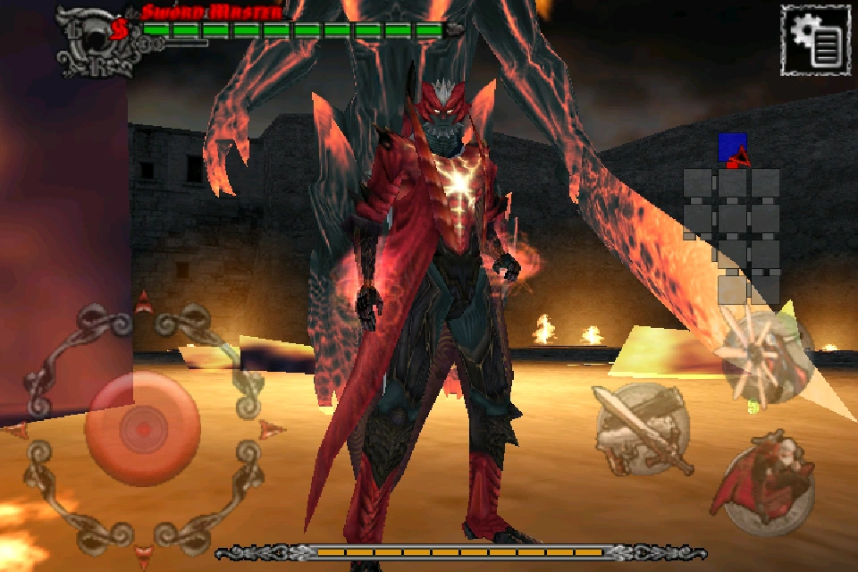
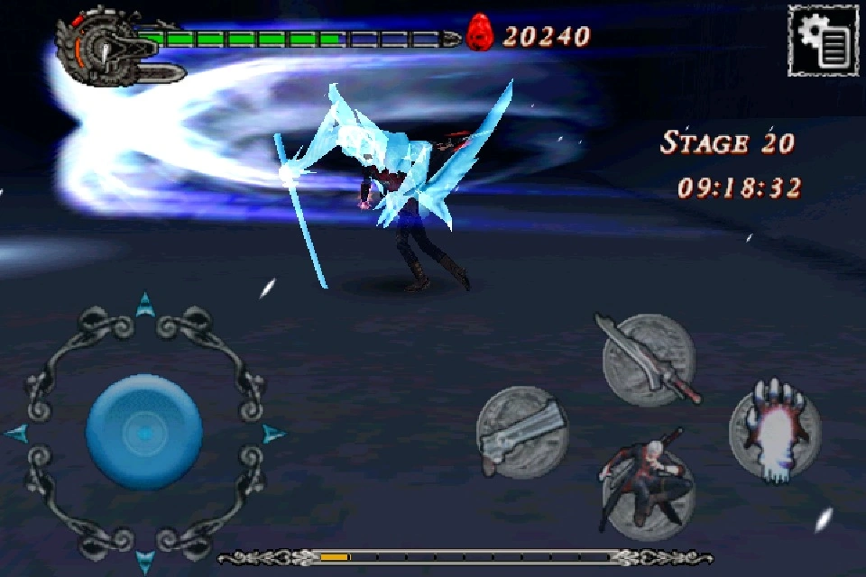

holy shitt dmc4!?! on the vita!?!
When I first modded my ps vita, I was really into DmC, and wanted a game to play on the vita, so when I saw talk of a mobile port of dmc4 I got interested.
It's originally for the iPhone, which I tried to make a really shit loader for, but despite both being ARMv7, Mach-O is just too different compared to ELF.
There IS an android version though, but it was locked to the G-GEE marketplace on the Xperia Play, and had this DRM that was specific to it, where the ELF was encrypted and renamed to an EXE, which the ACRODEA runtime would decrypt and resolve the imports, and this was really difficult to get running in a VM until someone told me about Droid4x, which I used to dump the game from memory.
When I got to that part and was fixing it up to try and run through soloader, a person on BilliBilli got some smarter people and showed it working on the vita.

Despite realising I made a ton of mistakes with how I was planning on porting it, which wouldn't have worked, I was really happy this got ported, and played it a fuck ton! Though barebones, I mostly played it to S-Rank the whole story to get the Yamato for beating the palace (it unlocks Devil Trigger).

Only unlocked after beating the Bloody Palace with Dante (image from the wiki)

Unlocked from beating the main story with S-Rank

Unlocked after beating the Bloody Palace with Nero